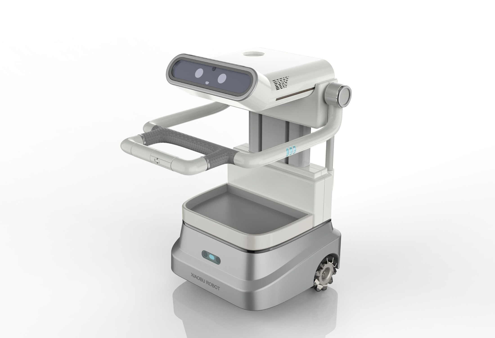
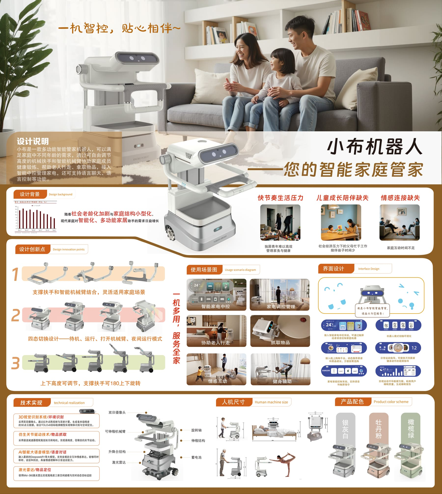

Challenge
家庭机器人容易显得冰冷、突兀。设计需要降低科技距离感，并兼顾老人、儿童和日常家居环境。
智能硬件设计 · 家庭陪伴机器人
面向现代家庭的智能陪伴与家居控制设备。项目重点不是堆叠功能，而是让一个技术产品在老人、儿童和家庭空间中显得可信、温和、容易接近。

家庭机器人容易显得冰冷、突兀。设计需要降低科技距离感，并兼顾老人、儿童和日常家居环境。
负责产品定位、造型语言、CMF方向、灯光反馈以及家庭交互场景的整体表达。
用圆润体块、低攻击性的比例、柔和白灰材质和青色灯光，塑造“家庭成员”而不是“设备”的感受。
方案把陪伴、家居控制和移动服务整合为一个清晰产品系统，展示从场景到硬件语言的完整设计能力。
Product Video
Product Language
界面层面把温度、照明、家电状态和机器人当前模式放在同一视觉系统里，用户不需要进入复杂层级，就能快速判断家庭设备的运行状态。


机器人不是单纯等待指令的控制器。通过表情化的灯光、柔和的体块和移动服务托盘，它可以承担提醒、陪伴、送物和家居联动等轻量任务。
Service Logic
围绕起身、如厕、取物、服药和康复训练，梳理老人独居时最容易产生风险和求助需求的时间点。
把扶手、托盘、表情屏、语音反馈和移动底盘连接成可感知的帮助，而不是停留在概念功能列表。
用传感器、视觉识别、压力检测和药品图像数据库支撑提醒、递送、异常判断与家属同步。


Full Board
